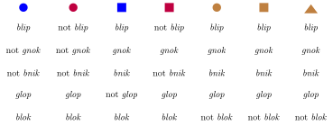

The problem of overgeneration (Solutions)
Write a negative trigram grammar for intervocalic devoicing, assuming that the alphabet consists only of a, o, s, z, and l. Remember that s is voiceless and z is voiced. Also, l is not subject to intervocalic voicing.
The negative grammar is the smallest set containing all of the following trigrams:
- aza
- aza
- oza
- ozo
The key insight here is that this grammar works exactly like the grammar for intervocalic voicing we encountered in an earlier unit, except that s has been replaced with z in all trigrams. We can do this because our \(n\)-gram grammars have no understanding of what these symbols actually mean, they’re all just meaningless blobs of different shapes.
Assuming the same alphabet as in the previous exercise, write a bigram grammar (it may be positive or negative) that requires every word to start with a and end with s.
A negative grammar provides the smallest solution:
- >o
- >s
- >z
- >l
- a<
- o<
- z<
- l<
A positive grammar states more explicitly what we may start and end with, but then we have to add 25 additional bigrams to capture the lack of combinatorial restrictions within the word:
- >a
- s<
- any \(xy\) such that \(x\) and \(y\) are symbols in alphabet \(\Sigma\) (without edge markers).
Either way this constraint is very unnatural as no language requires all words to always start and end with the same sounds.
Assuming the same alphabet as before, write a trigram grammar (it may be positive or negative) for “penultimate s”: if a word has at least two symbols, then the last but one symbol must be s.
This is again easier to do with a negative grammar. The grammar contains all trigrams of the form \(xy<\) such that \(x\) is not \(s\) and \(y\) is any random symbol of our alphabet:
- No penultimate a
- aa<
- ao<
- as<
- az<
- al<
- No penultimate o
- oa<
- oo<
- os<
- oz<
- ol<
- No penultimate z
- za<
- zo<
- zs<
- zz<
- zl<
- No penultimate l
- la<
- lo<
- ls<
- lz<
- ll<
This is again a very unnatural constraint that is the result of taking a natural one (penultimate stress) and changing what kind of symbol it may apply to.
Suppose that English only contains the words the, old, man, woman, sleep, sleeps, snore, and snores. Assume furthermore that the English subject verb agreement system works as follows: if the subject does not contain an adjective (like old), then use the inflected verb form; otherwise, use the base form. So we would get The old man snore but The man snores. Write a trigram grammar (it may be positive or negative) that captures this unnatural condition.
This is easily captured by a negative trigram grammar that contains 8 trigrams.
- With adjectives, agreement is blocked
- old man snores
- old man sleeps
- old woman snores
- old woman sleeps
- Without adjectives, agreement is mandatory
- the man snore
- the man sleep
- the woman snore
- the woman sleep
Assume that our alphabet consists of a, o, s, z, and l, as before. Write a bigram grammar (it may be positive or negative) that requires every word to consist of exactly 1 symbol. Explain why it is highly unlikely that any natural language would have such a constraint on words.
In this case, the positive grammar is slightly smaller:
- >a
- a<
- >o
- o<
- >s
- s<
- >z
- z<
- >l
- l<
However, the negative grammar states the requirement more explicitly:
- Have at least one symbol
- ><
- Don’t have two symbols
- aa
- ao
- as
- az
- al
- oa
- oo
- os
- oz
- ol
- sa
- so
- ss
- sz
- sl
- za
- zo
- zs
- zz
- zl
- la
- lo
- ls
- lz
- ll
Either way this constraint would greatly limit a language’s vocabulary. With \(n\) distinct sounds, there could be at most \(n\) distinct words. We know that every language has thousands of words, whereas the number of sounds is usually in the dozens and at best in the hundreds. This immediately shows that no language limits itself to words with a single sound.
For each constraint above, give a concrete example from English that violates it.
- The further to the right a syllable occurs in a word, the more consonants it must have: Perhaps this one?
- Any sequence of sounds is a possible word as long as it contains at least as many vowels as consonants: bnrpauieo
- When we sort the words of a language by their length, we get the Fibonacci series: 1, 1, 2, 3, 5, 8, 13, …: a, I, it, is, … (if one counts length in terms of characters, but it also breaks down with sounds because there’s many words with three sounds, and also many with four sounds)
- The first word in a sentence must rhyme with the last word in a sentence: I don’t think so, no.
- Every sentence must have an even number of words: Every sentence must have an even number of words.
- To negate a sentence, utter it backwards: “backwards it utter, sentence a negate to” doesn’t mean that we cannot negate a sentence by uttering it backwards — it’s just gibberish
- Adjectives that start with a vowel go before the noun, adjectives that start with a consonant go after the noun: no good deed goes unpunished unless it is a deed undone
- Relative clauses follow the noun they modify if it is the subject, but otherwise precede the noun: I provide that is a counterexample this sentence.
::: exercise Can you think of a constraint that you are fairly certain does not arise in any natural language?
Hint: Mathematical concepts like prime numbers are very fruitful for this.
Oh boy, the list is endless:
- The number of verbs in the sentence must be prime.
- If a sentence contains a coordination, then the sentence must also contain a preposition.
- All sentences must be palindromes (they are the same from left-to-right and right-to-left, e.g. John likes John).
- A word that contains the sound a may not be adjacent to word that contains an affix that marks aspect or tense.
- If two words in a sentence could be contracted but aren’t (e.g. contraction of it and is to it’s), then the sentence may not contain any contractions at all.
- The word order in sentences with an even number of words is the reverse of the word order in sentences with an odd number of words.
- If a sentence contains at least 10 words, then it must contain at least 20 words (in other words, you cannot have sentences where the number of words is somewhere between 10 and 19).
- If a sentence consists of multiple subordinate clauses, then no subordinate clause C must contain any nouns that also occur in the clause containing C.
And so on, and so on. The list is endless.
You might think the previous example is contrived because there’s no utility to those new classes. So let’s consider a case where utility doesn’t even factor into things. Below is a chart showing some made-up English words and what kind of objects this word can refer to. For example, the first row tells us that blue circles and blue squares are blip, whereas red circles and red squares are not blip. Try to infer the meaning of those words from those examples.
Now consider this expanded chart which also contains information about brown objects. Is your original hypothesis still correct? Can you make more sense of the words now, or did things just get really confusing?

Once you’re done pondering those questions, go to the end of the unit for a definition of each word. Do they strike you as particularly natural? If not, what is it about them that makes them weird?
They are extremely unnatural because they combine words in ways that are not intersective. For whatever reasons, when languages combine multiple meanings into a single word, the combination has to be via and. A bachelor is somebody who is single and male. There is no corresponding term for somebody who is single or male, or for somebody who is such that if they are single, then they are male.
Sometimes we do get things that look like a combination of or. For example, a university employee is somebody who is staff or faculty. But this is an accident of how the part-whole relation works in this case. Universities happen to be such that their set of employees can be broken down further into subtypes. But this isn’t a combination of multiple terms via or, just like the meaning of blue isn’t light blue or dark blue. Mathematically the two may be equivalent, but that’s not how humans think about it.